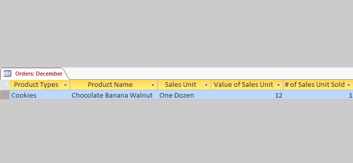
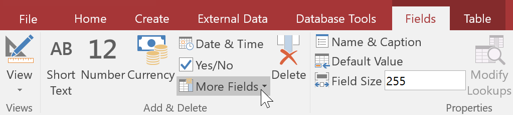
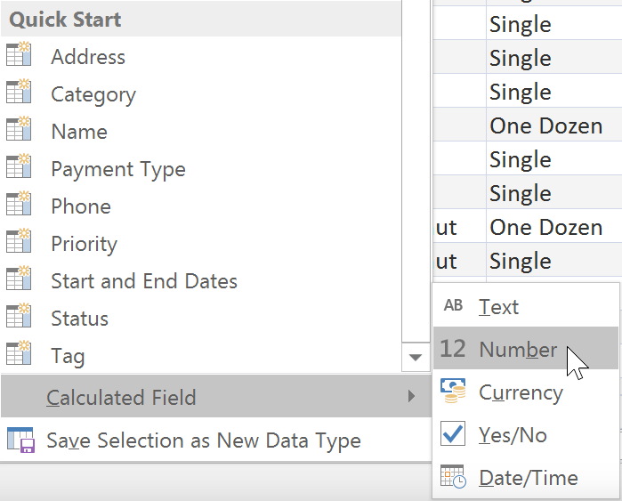
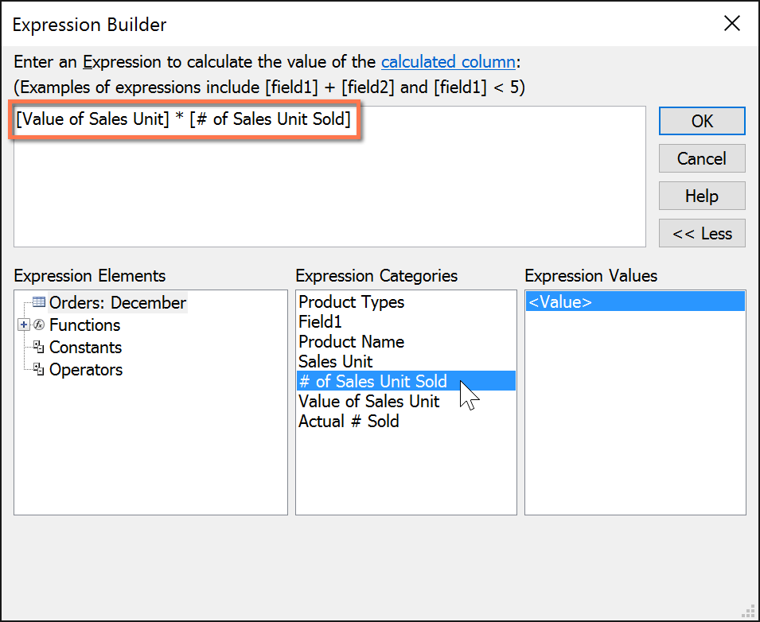
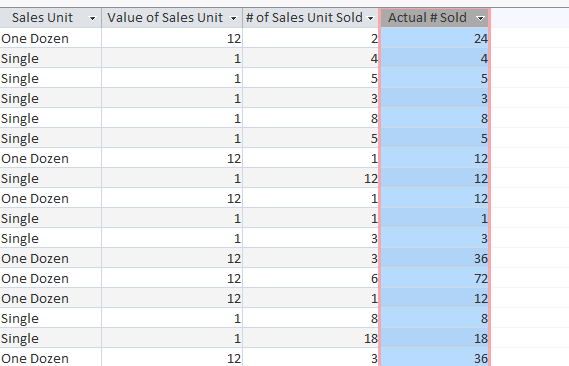
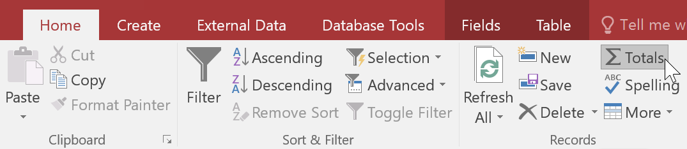
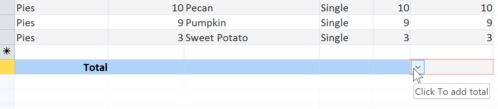
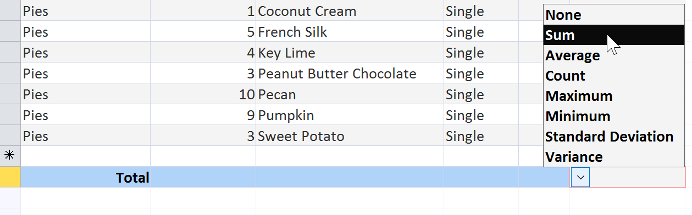
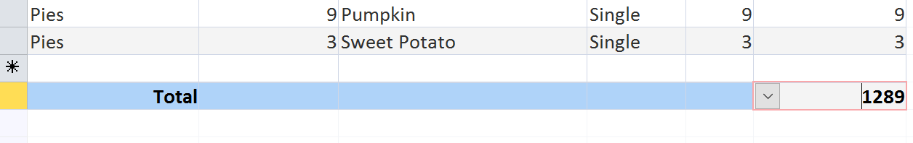

Câmpurile calculate și rândurile de totaluri vă permit să efectuați calcule cu datele din tabelele dvs. Câmpurile calculate efectuează calcule folosind date dintr-o singură înregistrare, în timp ce rândurile de totaluri efectuează un calcul pe un întreg câmp de date.
Câmpuri calculateCând creați un câmp calculat, adăugați un câmp nou în care fiecare rând conține un calcul care implică alte câmpuri numerice din acel rând. Pentru a face acest lucru, trebuie să introduceți o expresie matematică , care este alcătuită din nume de câmpuri din tabel și simboluri matematice. Nu trebuie să știți prea multe despre matematică sau construirea expresiilor pentru a crea un câmp util calculat. De fapt, puteți scrie expresii robuste folosind numai matematica de la școală. De exemplu, ai putea:
În exemplul nostru, vom folosi un tabel care conține comenzile de la o lună. Tabelul conține articole enumerate în funcție de unitatea de vânzări — unică, jumătate de duzină și duzină. O coloană ne informează numărul vândut al fiecărei unități de vânzare. Un altul ne permite să cunoaștem valoarea numerică reală a fiecăreia dintre aceste unități. De exemplu, în rândul de sus puteți vedea că s-au vândut două duzini de brownies-uri și că o duzină este egală cu 12 brownies.

Pentru a găsi numărul total de brownies vândute, va trebui să înmulțim numărul de unități vândute cu valoarea numerică a acelei unități - aici, 2*12, care este egal cu 24. Aceasta a fost o problemă simplă, dar efectuând aceasta calculul pentru fiecare rând al tabelului ar fi plictisitor și consumator de timp. În schimb, putem crea un câmp calculat care arată produsul acestor două câmpuri înmulțit împreună pe fiecare rând.
Pentru a crea un câmp calculat:



Rândul de totaluri adună o întreagă coloană de numere, la fel ca într-un registru sau pe o chitanță. Suma rezultată apare într-un rând special în partea de jos a tabelului.
Pentru exemplul nostru, vom adăuga un rând de totaluri la câmpul nostru calculat. Aceasta ne va arăta numărul total de articole vândute.
Pentru a crea un rând de totaluri:


